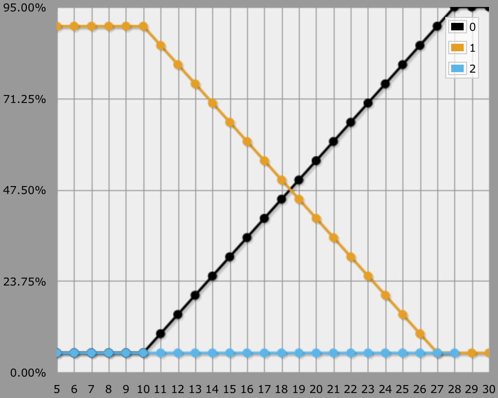
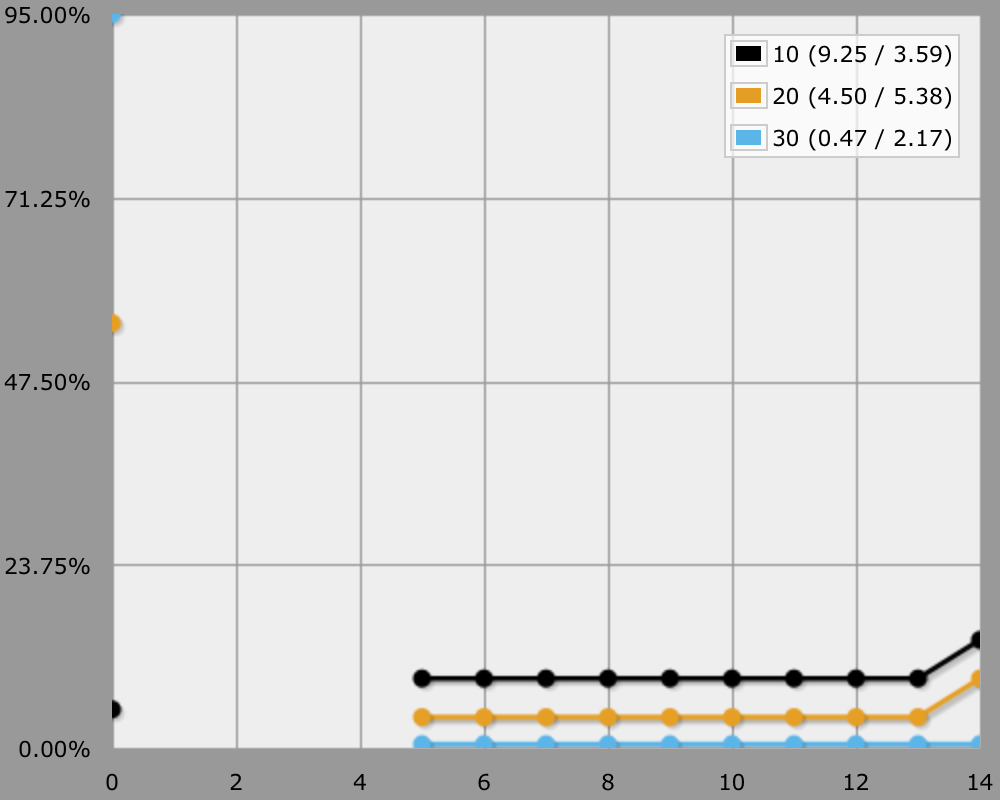
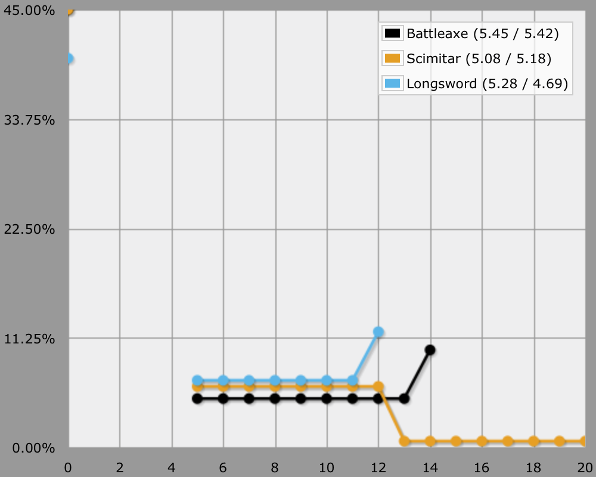
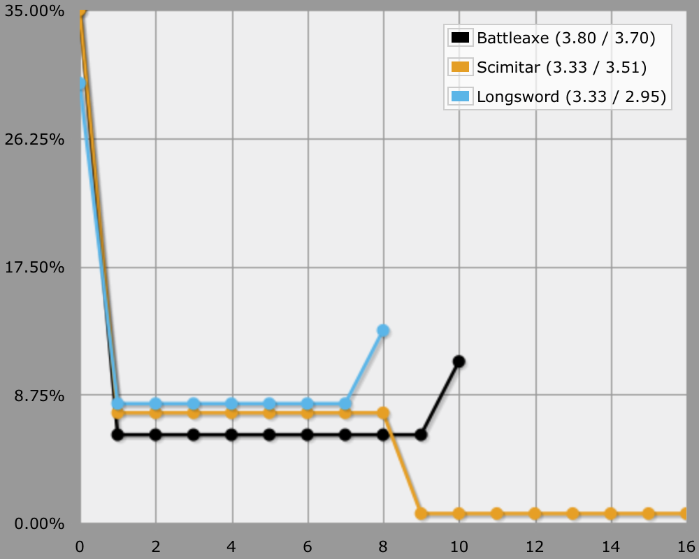
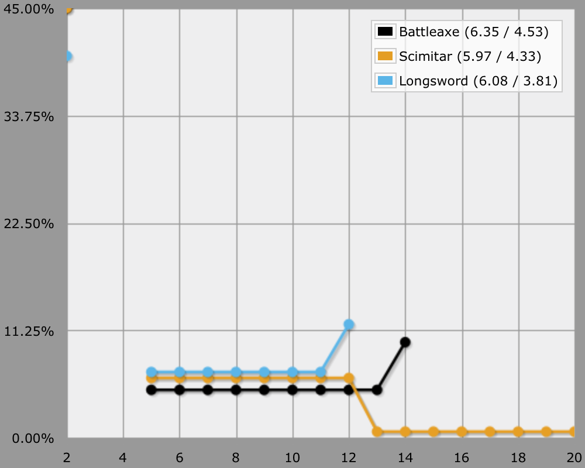
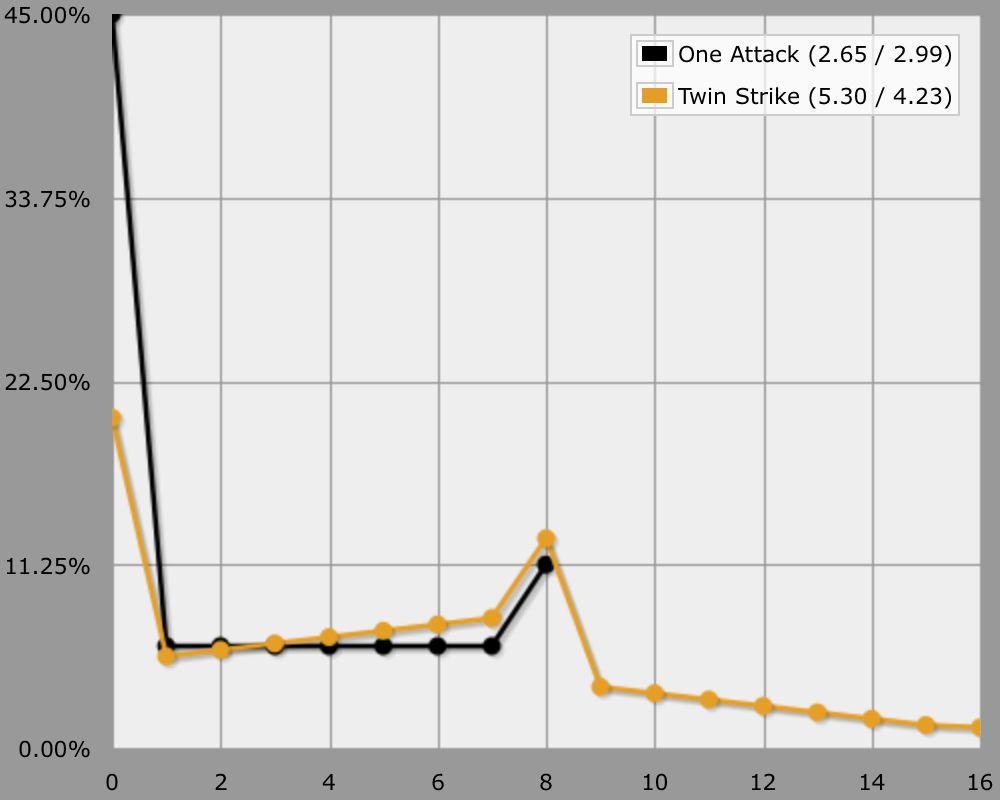
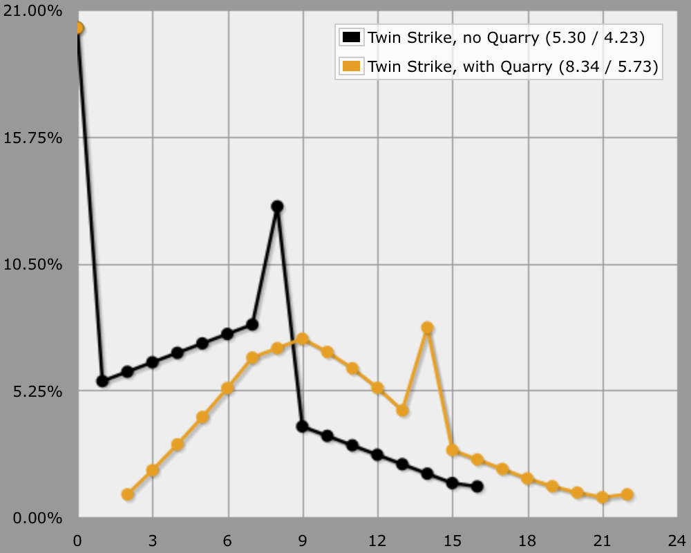
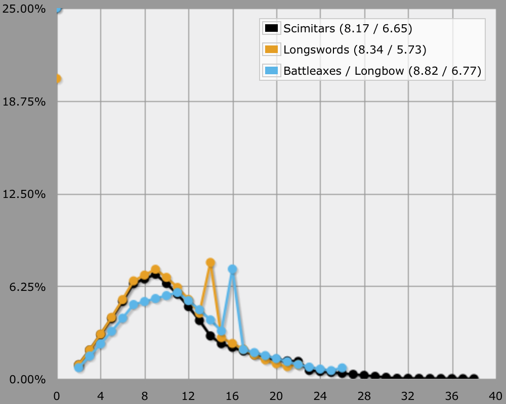
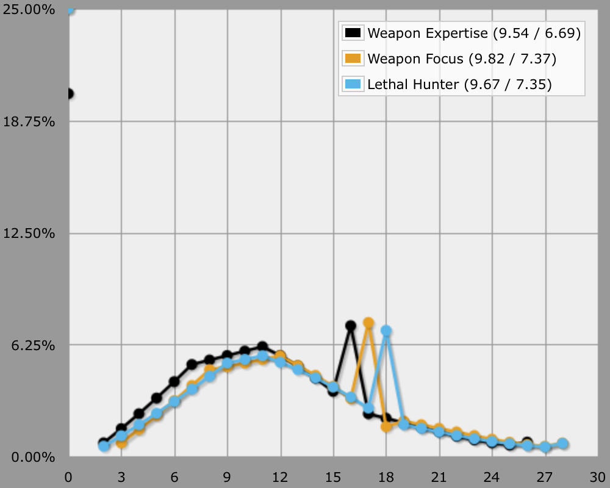
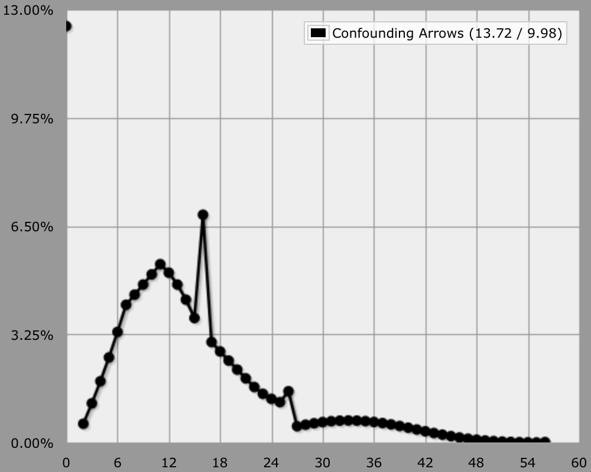

D&D 4 Attacks
Hitting and Dealing Damage
How can you use AnyDice to figure out the damage per round of a Dungeons and Dragons 4th edition character? Let's keep it simple for now and only consider a melee basic attack.
Our test character is a 1st level Fighter with a Strength of 18, wielding a bastard sword in one hand. So he has a +8 attack bonus and deals 1d10 + 4 damage on a hit.
Hitting
What are the odds of our Fighter landing a blow, against AC 15? If we use 0 to represent a miss and 1 to represent a hit, we could use a simple comparison.
output d20 + 8 >= 15
However, this is a bit too simplistic, because it ignores automatic hits and misses, as well as critical hits. So we need to both look at the raw d20 roll besides comparing the modified roll to the AC. Let's start by making things descriptive and introduce variable names for the three results of an attack roll.
MISS: 0 HIT: 1 CRITICALHIT: 2
We can now create a function that tells us whether we got a crit, a hit, or a miss.
function: attack ROLL:n vs DEFENSE:n {
if ROLL = 1 { result: MISS }
if ROLL = 20 {
if ROLL + ATTACK >= DEFENSE { result: CRITICALHIT }
result: HIT
}
if ROLL + ATTACK >= DEFENSE { result: HIT }
result: MISS
}
To use this function, first define the attack modifier and then invoke it with a raw d20 and the target defense.
ATTACK: 5 + 3 output [attack d20 vs 15]
To see how our Fighter fares against various different ACs, we can output the calculation multiple times for different ACs. The transposed graph is a useful display for this kind of comparison.
ATTACK: 5 + 3
loop AC over {5..30} {
output [attack d20 vs AC] named "[AC]"
}

Alternatively, we can compute the average hit chance for a range of ACs in one go. Effectively, we're rolling a die to determine the AC for each attack.
ATTACK: 5 + 3
output [attack d20 vs d{5..30}]
This demonstrates that if our Fighter were to encounter lots of enemies with an AC uniformly spread between 5 and 30, he would hit 55.19% of the time, of which 4.62% would be critical hits. Of course this is a rather ridiculous AC range, but it serves to illustrate that automatic hits and misses are taken into consideration.
Dealing Damage
Now that we know the chances to hit, it's time to add the damage. We could this by altering our function to produce damage values instead of just success indicators. But let's keep hit and damage logic separately by creating a different function for it.
function: damage for ATTACKRESULT:n {
if ATTACKRESULT = CRITICALHIT {
result: CRITICALDAMAGE
}
if ATTACKRESULT = HIT {
result: HITDAMAGE
}
result: MISSDAMAGE
}
Now can we can see the damage that our fighter deals to different AC values.
ATTACK: 5 + 3
HITDAMAGE: d10 + 4
CRITICALDAMAGE: 14
MISSDAMAGE: 0
loop AC over {10, 20, 30} {
output [damage for [attack d20 vs AC]] named "[AC]"
}

Once again, we can compute the average damage for a range of ACs in one go.
output [damage for [attack d20 vs d{10..30}]]
This tells us that our Fighter deals 4.55 damage per attack on average, given an AC range of 10–30.
Comparing Weapons
Let's compare how our level 1 Fighter with Strength 18 would perform with different one-handed weapons, against a level-appropriate AC range of 12–22. I'm not repeating the miss damage declaration because it is the same for all weapons.
function: attack {
result: [damage for [attack d20 vs DEFENSE]]
}
DEFENSE: d{12..22}
ATTACK: 5 + 2
HITDAMAGE: d10 + 4
CRITICALDAMAGE: 14
MISSDAMAGE: 0
output [attack] named "Battleaxe"
ATTACK: 5 + 2
HITDAMAGE: d8 + 4
CRITICALDAMAGE: 12 + d8
output [attack] named "Scimitar"
ATTACK: 5 + 3
HITDAMAGE: d8 + 4
CRITICALDAMAGE: 12
output [attack] named "Longsword"

So which weapon is best? It depends on what you're looking for. The BattleAxe deals the highest average damage. The Longsword hits more often, but also deals the lowest maximum damage. The Scimitar deals the lowest average damage, but it has the highest maximum damage.
Sure Strike
What if our Fighter didn't use a Melee Basic Attack, but instead used Sure Strike? It has an additional +2 attack modifier, but no damage modifier.
ATTACK: 5 + 2 + 2 HITDAMAGE: d10 CRITICALDAMAGE: 10 MISSDAMAGE: 0 output [attack] named "Battleaxe" ATTACK: 5 + 2 + 2 HITDAMAGE: d8 CRITICALDAMAGE: 8 + d8 output [attack] named "Scimitar" ATTACK: 5 + 3 + 2 HITDAMAGE: d8 CRITICALDAMAGE: 8 output [attack] named "Longsword"

The Longsword and the Scimitar are now equal, while the Battleaxe is still the best average damage dealer. But the damage output sucks! There's no point in using this power at all, unless all you care about is hitting, in which case the Longsword is the obvious choice.
Reaping Strike
What about Reaping Strike? Let's use that MISS variable. Because it's the same for all one-handed weapons, we stiff need to define it only once.
ATTACK: 5 + 2 HITDAMAGE: d10 + 4 CRITICALDAMAGE: 14 MISSDAMAGE: 2 output [attack] named "Battleaxe" ATTACK: 5 + 2 HITDAMAGE: d8 + 4 CRITICALDAMAGE: 12 + d8 output [attack] named "Scimitar" ATTACK: 5 + 3 HITDAMAGE: d8 + 4 CRITICALDAMAGE: 12 output [attack] named "Longsword"

It looks a lot like a Melee Basic Attack, except that the damage graphs start at 2 instead of 0, so it's definitely an upgrade. The Longsword benefits less from Reaping Strike than the other two weapons, because it misses less often. However, its average damage is still higher than the Scimitar's.
Twin Strike
We've seen how we can compare single attacks in AnyDice, but what if multiple attacks are involved at the same time? And what if those attacks influence each other in some way? The Ranger's Twin Strike attack combined with the Hunter's Quarry class feature is the quintessential example, so let's use that. Our test case is a level 1 Ranger with a Dexterity of 18, once again attacking enemies with AC 12–22.
Twin Strike is simply two attacks instead of one, without the usual damage modifier to prevent it from becoming too strong. We can easily calculate this by just using the attack function twice.
ATTACK: 4 + 3 HITDAMAGE: d8 CRITICALDAMAGE: 8 MISSDAMAGE: 0 output [attack] named "One Attack" output 2d[attack] named "Twin Strike"

However, Hunter's Quarry adds bonus damage when hitting a designated target once per turn. This means that we have to add the bonus damage if a least one of the two attacks hits, but only once. Twin Strike is not the only attack that could deal bonus damage this way, so let's adjust our damage function to combine multiple attack results and support some form of extra damage.
function: damage for ATTACKRESULTS:s {
D: 0
loop A over ATTACKRESULTS {
if A = CRITICALHIT {
D: D + CRITICALDAMAGE
}
else if A = HIT {
D: D + HITDAMAGE
}
else {
D: D + MISSDAMAGE
}
}
result: D + [bonus damage for ATTACKRESULTS]
}
function: bonus damage for ATTACKRESULTS:s {
result: 0
}
function: attack {
result: [damage for [attack d20 vs DEFENSE]]
}
function: N:n attacks {
result: [damage for Nd[attack d20 vs DEFENSE]]
}
Now we can support Hunter's Quarry by replacing the default bonus function.
ATTACK: 4 + 3
HITDAMAGE: d8
CRITICALDAMAGE: 8
MISSDAMAGE: 0
QUARRY: d6
output [2 attacks] named "Twin Strike, no Quarry"
function: bonus damage for ATTACKRESULTS:s {
if [ATTACKRESULTS contains CRITICALHIT] {
result: [maximum of QUARRY]
}
if [ATTACKRESULTS contains HIT] {
result: QUARRY
}
result: 0
}
output [2 attacks] named "Twin Strike, with Quarry"

Comparing Ranger Options
Now that we support Twin Strike with Hunter's Quarry, we can investigate different options available to our level 1 Ranger. Which weapons do you prefer?
ATTACK: 4 + 2 HITDAMAGE: d8 CRITICALDAMAGE: 8 + d8 MISSDAMAGE: 0 QUARRY: d6 output [2 attacks] named "Scimitars" ATTACK: 4 + 3 HITDAMAGE: d8 CRITICALDAMAGE: 8 output [2 attacks] named "Longswords" ATTACK: 4 + 2 HITDAMAGE: d10 CRITICALDAMAGE: 10 output [2 attacks] named "Battleaxes / Longbow"

Feat choice can also make a big difference, here are three choices combined with a longbow.
ATTACK: 4 + 2 + 1 HITDAMAGE: d10 CRITICALDAMAGE: 10 MISSDAMAGE: 0 QUARRY: d6 output [2 attacks] named "Weapon Expertise" ATTACK: 4 + 2 HITDAMAGE: d10 + 1 CRITICALDAMAGE: 11 output [2 attacks] named "Weapon Focus" ATTACK: 4 + 2 HITDAMAGE: d10 CRITICALDAMAGE: 10 QUARRY: d8 output [2 attacks] named "Lethal Hunter"

Confounding Arrows
As a bonus, let's consider Confounding Arrows, with all three attacks aimed at a single target. This would be a level 1 character performing a level 15 attack, but let's not get distracted by that. Disregarding the daze and stun effects, the special thing of this power is that if all three attacks connect, it deals an extra +2[W]. As this extra damage gets added to the last attack, it gets maximized if that attack is a critical hit. At least, that's the interpretation we'll use for this program.
So we replace the bonus damage function with one that also takes Confounding Arrows into consideration. We add a check to see if there aren't any misses and whether the third attack is a critical hit, adding damage as needed.
function: bonus damage for ATTACKRESULTS:s {
if [ATTACKRESULTS contains CRITICALHIT] {
D: [maximum of QUARRY]
}
else if [ATTACKRESULTS contains HIT] {
D: QUARRY
}
else {
D: 0
}
if ![ATTACKRESULTS contains MISS] {
if 3@ATTACKRESULTS = CRITICALHIT {
result: D + 20
}
result: D + 2d10
}
result: D
}
ATTACK: 4 + 2
HITDAMAGE: d10
CRITICALDAMAGE: 10
MISSDAMAGE: 0
QUARRY: d6
output [3 attacks] named "Confounding Arrows"
